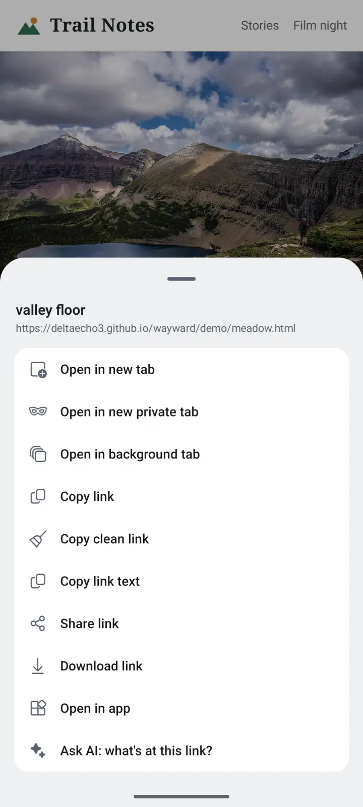
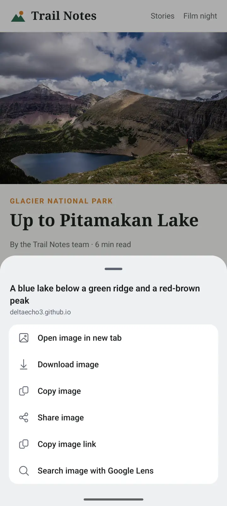
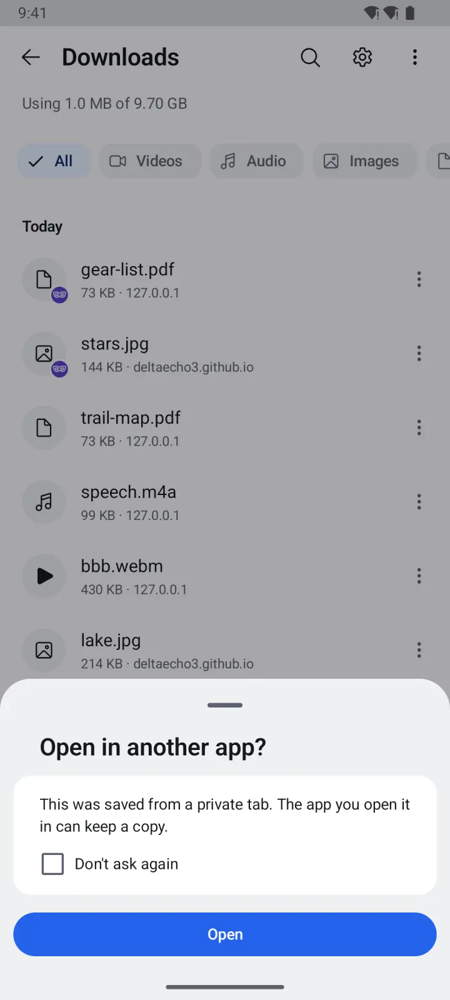

Download files, pictures and PDFs
How-to
Besides videos, you can save files, pictures and pages. They all land in Downloads.
A file behind a link
Tap a link to a file (a PDF, a zip, a document) and Wayward downloads it, as it does with attachments and files a page makes for you, and a PDF viewer's own Download button. To save what any link points to, hold the link and tap Download link. Wayward says Download started.

Until the file arrives, its row may show the link's words, or "File from" and the site when the page gave it no name.

A picture
Hold the picture and tap Download image. A GIF stays animated. Some pictures are drawn by the page itself and can't be saved on their own; for those Wayward says so instead.
Wayward takes where a photo was taken, the camera's details and Facebook's photo ID out of the pictures it saves, copies or shares, and out of the copy a site gets when you upload one. The picture itself doesn't change. When Wayward can't take them out (a HEIC photo, for one), it asks before you share, copy or upload the picture, and the download's row says Location and camera details not removed. To keep them, turn off Remove photo location and camera (see the other privacy settings).

A whole page
Open the ⋮ menu and tap Save as PDF: the page is saved as a PDF in Downloads, named after the page. See desktop site, zoom, print and save as PDF.
App files ask first
An app file (.apk, .apks, .apkm or .xapk) can install software (saving one doesn't install it), so Wayward asks before saving one: Download this app?, naming the site and the file. Apps from outside Google Play can harm your phone or take your data, so download one only if you trust the site. The Download button works after a moment's pause. An app file you didn't ask for isn't saved: Wayward says to tap its link if you do want it.
Open what you saved
In Downloads, tap a picture to see it, or a video or sound to play it in Wayward. Tap a document and it opens in an app on your phone that can read it. For a file saved from a private tab, Wayward asks Open in another app? first, since that app can keep a copy.

If nothing on your phone can open it, Wayward says No app on your phone opens this file.